Design for 3D Printing
Most failed prints fail long before anyone presses Print. The printer does exactly what the design tells it to, including building a shelf on nothing, a wall thinner than its nozzle, and a pin that's a hair wider than its hole. This lab is about catching those problems while they're still cheap: in Fusion, on your screen, before a printer spends two hours proving you wrong.
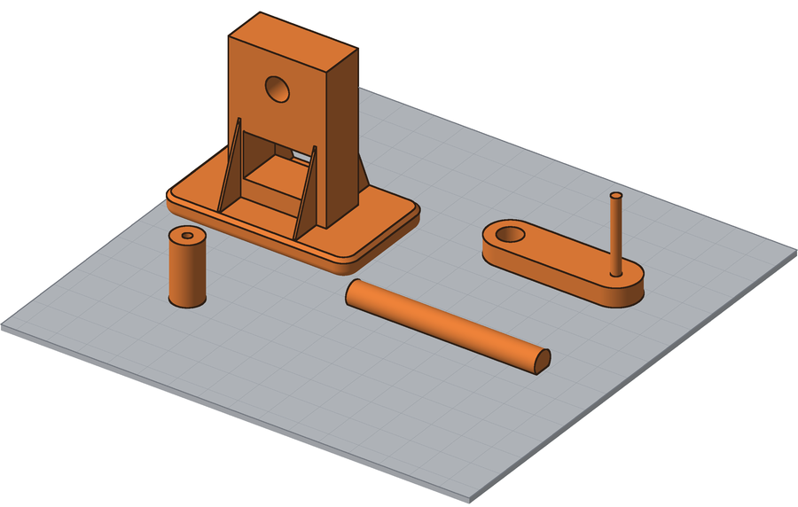
Overview
Your next project is a mechanism you design, print, and build, and every part of it has to survive the trip through a 3D printer. You'll learn eight design rules that decide whether a part prints and whether it works, first by predicting which way up the letters T, H, E, and Y will print, then by using Fusion's Inspect tools to find everything wrong with a hand crank that was designed badly on purpose.
Builds on: Assemblies and Joints — opening and copying designs from Class Files, orbiting a model, and reading an assembly.
Before you start
Sign in to Autodesk Fusion and open your notebook. The first part of the lab is a worksheet; Fusion comes second.
You've got it when…
- Your Which Way Up? entry ranks every THEY orientation that prints, names the rule that stops each one that doesn't, and picks an axle with a reason.
- The same entry says where Fusion's Draft Analysis disagreed with you, and who was right.
- Your Hand Crank Inspection entry lists seven problems, each with the rule it breaks and the tool that found it.
- Your Fits table has every diameter, every gap per side, and the two fits that are wrong.
Collaboration & AI
Work: On your own. Argue about the THEY letters with a neighbor all you like, but fill in your own worksheet and run your own inspection.
AI — AIAS Level 1, No AI: This lab builds your eye for printable design, so set AI aside. What the levels mean.
Which Way Up?
A 3D printer builds a part from the bottom up, one thin layer at a time, and every layer has to sit on something: the layer below it, or the bed (the flat plate the printer builds on). It can't print on air. That one fact decides whether your design prints, and the direction a part sits on the bed matters as much as its shape.
The word THEY is a classic way to see why. Each letter is a small lesson in what a printer can and can't do, and each one prints well in some positions and fails in others.
The rules for this worksheet
- Overhangs: an overhang is any surface that faces down with nothing under it. A printer can handle an overhang up to 45° from vertical. Anything flatter than that droops or fails unless the slicer adds supports, scaffolding printed under the part and broken off later.
- Bridges: a bridge is a flat span printed across a gap between two points at the same height. Bridges up to 10 mm print fine. Longer ones sag.
- Bed contact: more area touching the bed means the part is less likely to come loose or tip over partway through the print.
- Strength: a print is strong along its layers (X and Y) and weak across them (Z). Two layers peel apart far more easily than a single layer snaps.
Every letter is 40 mm tall and 10 mm thick, with 8 mm strokes. The gap between the legs of the H is 10 mm, the middle arm of the E is shorter than the other two, and the arms of the Y lean 30° from vertical.
-
Start a notebook entry titled Which Way Up? Copy the worksheet below into it, from Part 1: THEY through the last table. The images come along with the tables.
-
Complete Part 1. For each orientation, write Yes or No under Prints as shown? For every No, name the rule it breaks and where (for example, "overhang under the top arm"). Then rank the orientations that print, with 1 as the best: most bed contact and no supports. An orientation that doesn't print gets no rank.
-
Complete Part 2. This time strength counts too.
Part 1: THEY
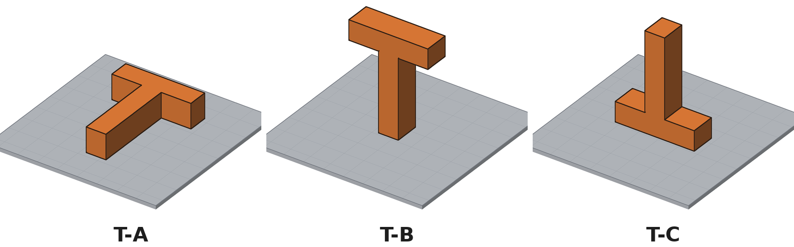
| Orientation | Prints as shown? | If not, which rule does it break, and where? | Rank |
|---|---|---|---|
| T-A | |||
| T-B | |||
| T-C |
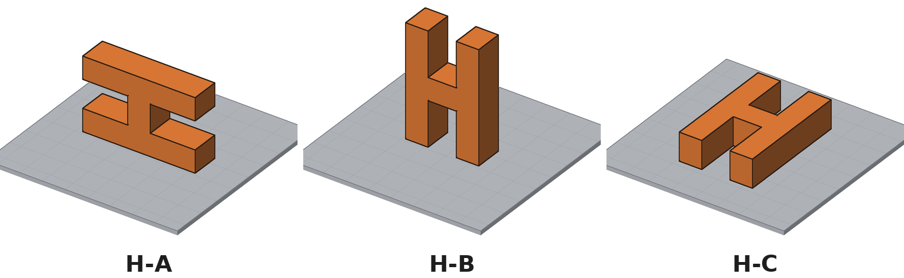
| Orientation | Prints as shown? | If not, which rule does it break, and where? | Rank |
|---|---|---|---|
| H-A | |||
| H-B | |||
| H-C |
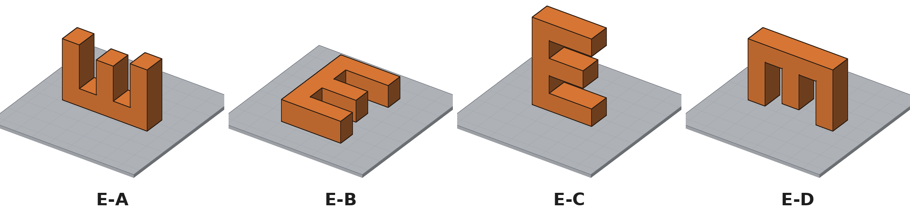
| Orientation | Prints as shown? | If not, which rule does it break, and where? | Rank |
|---|---|---|---|
| E-A | |||
| E-B | |||
| E-C | |||
| E-D |
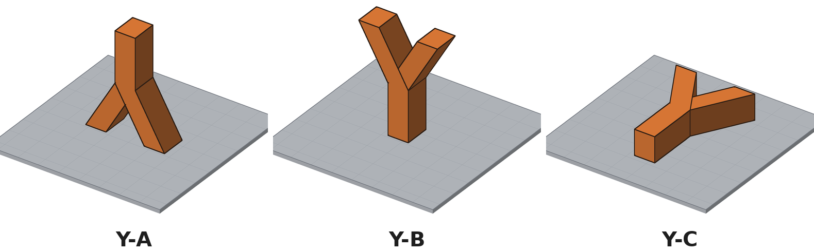
| Orientation | Prints as shown? | If not, which rule does it break, and where? | Rank |
|---|---|---|---|
| Y-A | |||
| Y-B | |||
| Y-C |
Part 2: The Axle
Your mechanism will need axles. This one is 6 mm in diameter and 40 mm long, and in use a wheel on one end pushes it sideways. Axle-B has a flat 1 mm deep along its length; Axle-C is perfectly round.
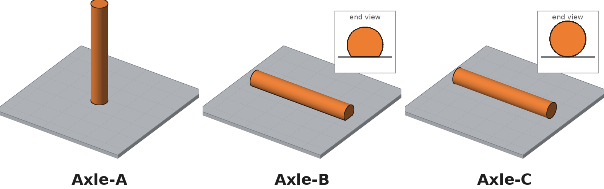
| Orientation | Prints as shown? | Strong when pushed sideways? | Why? |
|---|---|---|---|
| Axle-A | |||
| Axle-B | |||
| Axle-C |
| Which axle would you print? | Why? |
|---|---|
Inspect It in Fusion
Guessing from a picture is a start. Fusion can check a design against the rules before a printer ever sees it, using four tools on the Inspect menu:
| Tool | The question it answers |
|---|---|
| Draft Analysis | Which faces point down too far to print? |
| Measure | How big is it? Bridges, walls, pins, holes, and the gaps between parts. |
| Section Analysis | What does the inside look like? Some walls are hidden until you cut the part open. |
| Interference | Do two parts try to occupy the same space? |
You'll try Draft Analysis first on the THEY letters, where you already know the answers, then use all four tools on a hand crank that was designed badly on purpose.
The eight rules
Name problems by these rules in your notebook, so everyone uses the same words. The full list, with a picture for each rule, is on Design Rules for 3D Printing. Keep it open for the rest of the year.
| Rule | In short |
|---|---|
| Walls | At least 2 perimeters (0.9 mm); 3 (1.35 mm) where it needs strength |
| Overhangs | No more than 45° from vertical |
| Bridges | No longer than 10 mm; bridge the short way |
| Edges | Fillet vertical edges; chamfer horizontal edges, especially at the bed |
| Bed contact | Biggest flat face on the bed; as few supports as possible |
| Strength | Strong along the layers (X and Y), weak across them (Z) |
| Fits | Gap per side: press 0.1 mm, close 0.2 mm, free 0.3 mm; pins at least 3 mm |
| One piece | Every printed piece gets its own Fusion Part Design |
Set Up Your Lab Folder
-
In the Data Panel, open your Fusion student folder and create a new folder named
Design for Printing. -
Browse to Class Files ▸
Design for Printing. It holds three designs:THEY Orientations,Hand Crank Print Plate, andHand Crank Assembly. -
Right-click each design, choose Copy, and select your own
Design for Printingfolder as the destination. Open your folder and confirm all three are there.
Draft Analysis on THEY
Draft Analysis was built for molded parts, which have to slide out of a mold, but it answers the printer's first question just as well: which faces point down? Tell it which way is up, and it colors every face by the way it tips.
-
Open
THEY Orientations. The thirteen letters from your worksheet sit on a gray Bed, in the same rows and the same positions as the worksheet images. The Browser names each one:T-A:1,T-B:1, and so on. (Fusion adds the:1.) -
Select Inspect ▸ Draft Analysis.
-
With Body active in the dialog, drag a selection box around all thirteen letters. It's fine if the Bed gets selected too.
-
Click Direction. In the Browser, expand the Origin folder and click Z. The pull direction is now straight up, the way the printer builds. OK stays grayed out until you pick a direction.
-
Leave the Draft Angle values alone and uncheck Tolerance Zone. (Fusion remembers your settings, so next time it may already be unchecked.) Your screen should look like this. Then click OK.
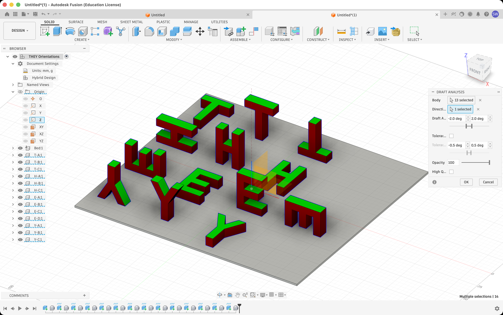
Reading the colors
- Green faces point up. They always print.
- Red faces are walls, straight up and down. They always print.
- Blue faces point down, even a little. Every blue face is a
suspect, and you decide each one:
- Sitting on the bed? Fine.
- Flat, spanning a gap with support at both ends? It's a bridge. Measure the gap: 10 mm or less prints.
- Tilted? Measure its angle: no more than 45° from vertical prints.
- Curved? Find where it's flattest. If it goes all the way to flat, like the top of a round hole or a fillet along a bottom edge, part of it is past 45°. A curve that stops at an edge before it gets flat may be fine.
- Anything else needs supports.
Draft Analysis finds the suspects. You make the call.
-
Overhangs face down, so they hide from a camera above the part. In the Browser, click the eye icon beside the Bed to hide it, then orbit until you're looking steeply up at the letters from underneath. Your screen should look like this.
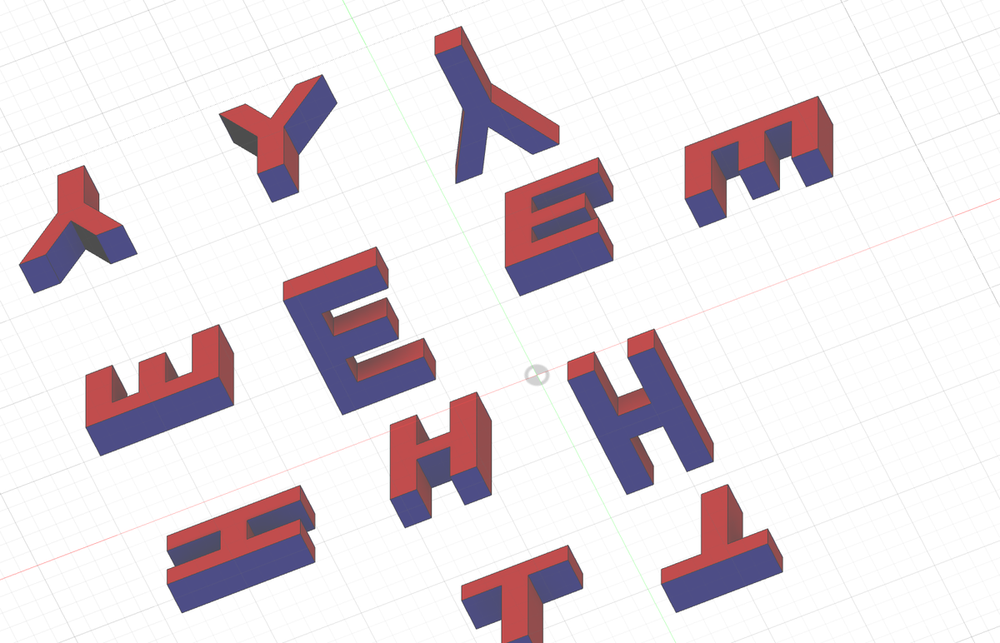
Blue turns gray at a shallow angle
Fusion only shows blue clearly when you're looking up at a face. Seen from the side, a face that points down can look gray or even black. If a face looks gray, orbit until you're looking up at it.
-
Compare the blue faces to your answers in Part 1 of your Which Way Up? entry. Two of them need Measure to decide:
- The H-B crossbar is blue and flat, so it's a bridge. Select Inspect ▸ Measure (or press I), then click the inside faces of H-B's two legs. The distance between them is the length of the bridge. Is it 10 mm or less?
- The arms of Y-B are blue underneath, because they lean. Click Clear Selection in the Measure dialog, then click the underside of one arm and the side of the stem just below it. Measure reports the angle between them. (If it's more than 90°, subtract it from 180°.) Is it 45° or less?
-
Below Part 2 of your Which Way Up? entry, write one sentence for every orientation where Fusion disagreed with your worksheet, and say which of you was right. If Fusion agreed every time, write that instead.
-
Hide the analysis before moving on. In the Browser, expand the Analysis folder and click the eye icon beside Draft1.
Inspect the Hand Crank
The Hand Crank has four parts. The bracket holds an axle that turns
in its hole. The crank is pressed onto one end of the axle, and a knob
spins on the crank's pin so your hand doesn't rub. Hand Crank Print
Plate shows each part on the bed in the direction it would print, and
Hand Crank Assembly shows the parts put together.
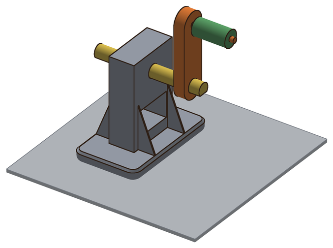
The Hand Crank breaks seven rules, and two of its features look suspicious but are correct. Your job is to find all seven problems before a printer does.
-
Start a notebook entry titled Hand Crank Inspection. Copy both tables below into it. You'll fill them in as you work.
Problems
# Part What's wrong, and where Rule Found with 1 2 3 4 5 6 7 Fits
Where Shaft or pin diameter Hole diameter Gap per side Fit it is Fit it should be Axle in Bracket Axle in Crank Pin in Knob
Overhangs and Bridges
-
Open
Hand Crank Print Plate. Run Draft Analysis on all four parts exactly as you did in steps 8 through 11, then hide the Bed. -
Orbit underneath the Bracket and decide every blue face, the same way you did on the letters. Check the bottom edges where the Bracket meets the bed and the ceiling of the opening in the tower. Record each problem in your Problems table, with Draft Analysis under Found with. Your screen should look like this.
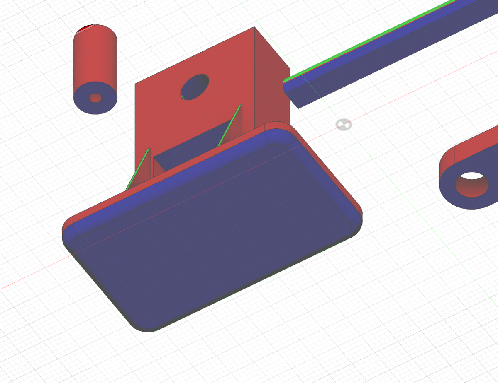
The top of the axle hole hides
The inside of a small horizontal hole is almost impossible to see from below, so its color won't help. Decide it with the rule for curved faces instead: does the top of a round hole go all the way to flat?
-
The ceiling of the tower opening is blue, so it's a bridge. Use Measure on the two side walls of the opening to find out how long it is, and decide whether it passes. Add Measure to that row's Found with column.
-
Hide the draft analysis (the eye icon beside Draft1). This one isn't optional: while a draft analysis is showing, Fusion won't show a section cut.
Thin Walls
Some walls are too thin to see from outside, or too thin to click on. Section Analysis slices the design along a plane, like cutting an apple in half, so you can see and measure what's inside.
-
Select Inspect ▸ Section Analysis. For the Cut Plane, go to the Browser, expand Origin, and click XZ. In this design, that plane runs right through two of the thin triangles that brace the tower. These are gussets.
-
Click Flip so the cut face points toward you, then click OK. Your screen should look like this: the hatched face is where the Bracket was cut, and the two narrow hatched slivers are the gussets.
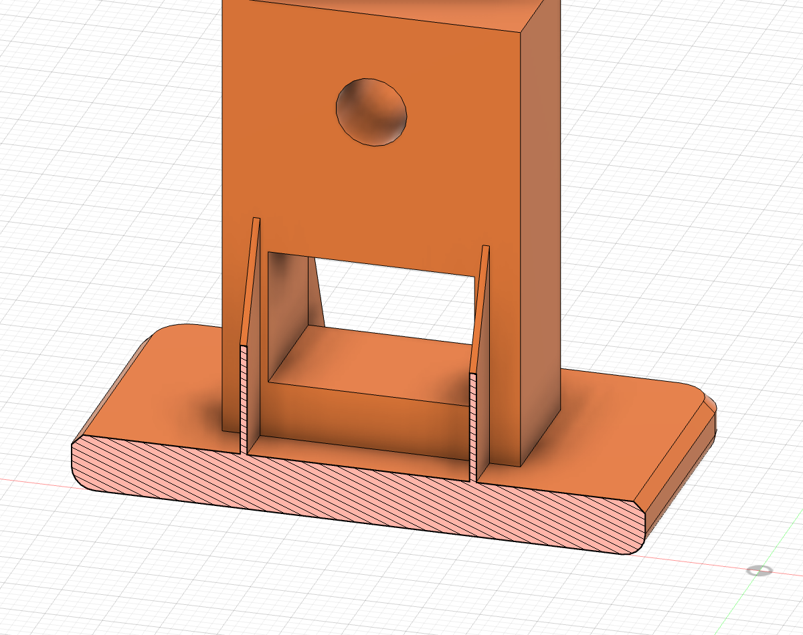
-
Press I for Measure and click the flat side of one gusset. Orbit until you can see the other side of the same gusset, and click that side too. Compare the distance to the Walls rule and record what you find, with Section Analysis and Measure under Found with.
-
Hide the section analysis (the eye icon beside Section1). The cut also hides the Axle and the Knob, and you need them next.
Holes and Pins
Holes and pins don't need a section. Click the curved face of a hole or a pin, and Measure reads its diameter directly.
-
Open Measure again. In its dialog, set Precision to 0.123 if it isn't already. Diameters show two decimal places (6.20 mm, for example), which is enough to see a 0.1 mm gap.
-
Click the curved inside face of the Bracket's axle hole. Write its Diameter in the Fits table, in the Hole diameter column of the Axle in Bracket row. Your screen should look like this.
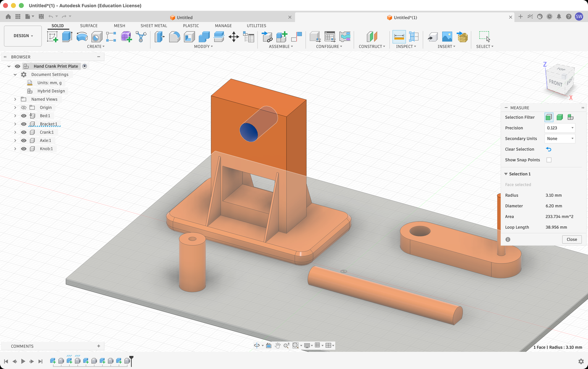
-
Click Clear Selection, then measure and record the rest of the Fits table the same way: the curved side of the Axle, the inside of the Crank's axle hole, the side of the Crank's pin, and the inside of the Knob's hole.
-
Fill in Gap per side for each row. The gap is shared by both sides of the shaft, so it's half the difference:
Gap per side = (hole diameter − shaft diameter) ÷ 2
A negative gap means the shaft is bigger than its hole.
-
Name each fit using the Fits rule: 0.1 mm is press, 0.2 mm is close, 0.3 mm is free. Then decide what each fit should be. Does that part need to turn, or stay put? Any row where Fit it is and Fit it should be don't match is a problem; add it to the Problems table.
-
While you have the Crank's pin measured, compare it to the minimum pin size in the Fits rule. Then look at which way the pin stands on the bed, and think about the Strength rule. Your hand pushes the knob sideways every time you turn the crank. Record the problem.
Interference
The last check happens in the assembly. Interference means two parts occupy the same space in the design, which the real parts can't do.
-
Open
Hand Crank Assemblyand select Inspect ▸ Interference. -
Drag a selection box around the whole assembly so all four components are selected. Leave Include Coincident Faces unchecked, and click Compute.
-
Read the Interference Results. Each row is a group: the two parts that overlap (Component 1 and Component 2) and the volume of the overlap. Fusion also zooms in and shows the overlap in red. Your screen should look like this.
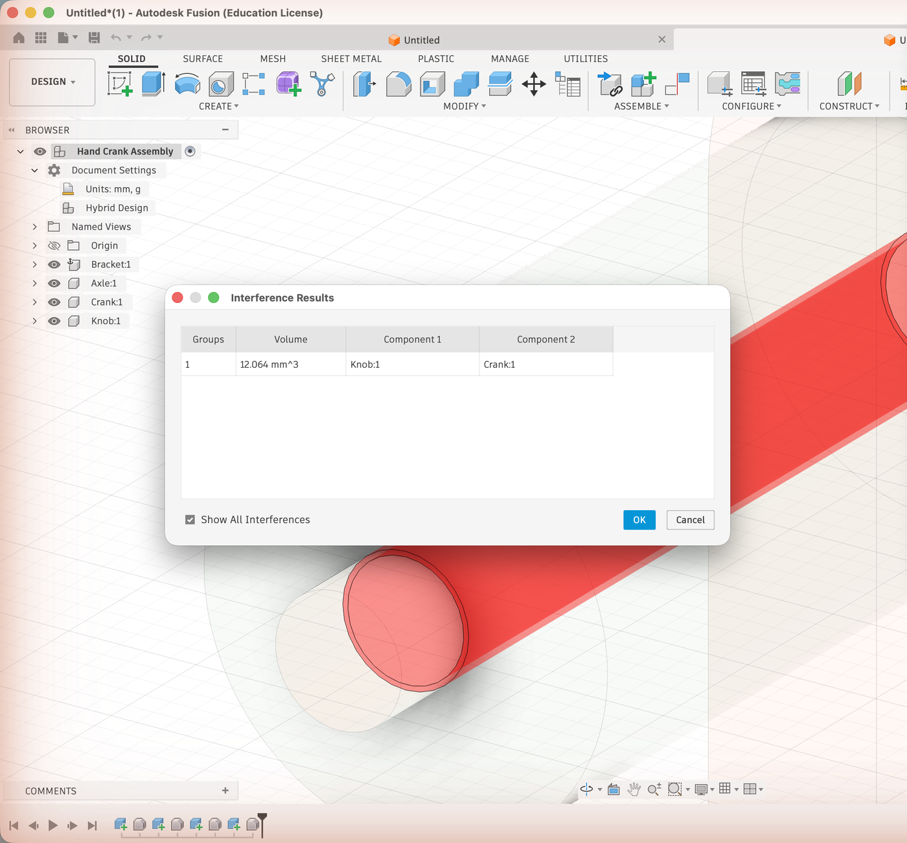
Record what you find in your Problems table, and check that it agrees with your Fits table.No interference isn't the same as a good fit
Interference only reports parts that overlap. The Axle and the Bracket don't overlap, so Interference says nothing about them, but your Fits table says they're wrong anyway. Parts that don't collide can still be too tight to move. Use both tools.
Checkpoint
Your Problems table lists seven problems, each with a rule and the tool that found it. Your Fits table has a diameter in every cell, three gaps, and two rows marked as wrong. The two features that looked suspicious but are correct are the ones you didn't list.
Turn It In
- A notebook entry titled Which Way Up? with Parts 1 and 2 of the worksheet complete, and your sentences on where Fusion disagreed with you.
- A notebook entry titled Hand Crank Inspection with the Problems and Fits tables complete.
How It's Graded
This lab is worth up to 4 points. One score covers everything you turn in.
| Score | What it looks like |
|---|---|
| 4 — Excellent | Every THEY orientation is marked, every one that fails names its rule and where, and the ones that print are ranked; the axle choice has a reason that uses both printing and strength; the Fusion comparison is written; the Problems table has all seven problems with the right rule and tool; the Fits table has every diameter and gap, correctly named. |
| 3 — Above Average | Both entries are complete, with a slip: a misnamed rule, one gap calculated wrong, a missing Fusion comparison, or six of the seven problems. |
| 2 — Average | The worksheet is complete but the inspection is half done: four or five problems, or a Fits table with gaps missing. |
| 1 — Below Average | A worksheet with a few answers and little or no inspection. |
| 0 — Failing | Neither entry is in the notebook. |